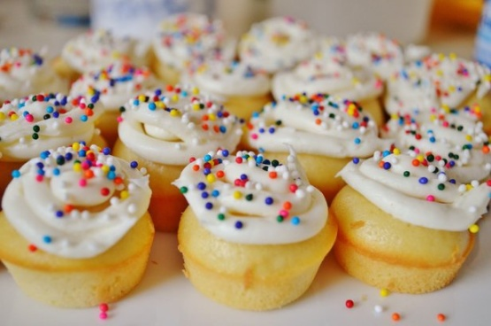
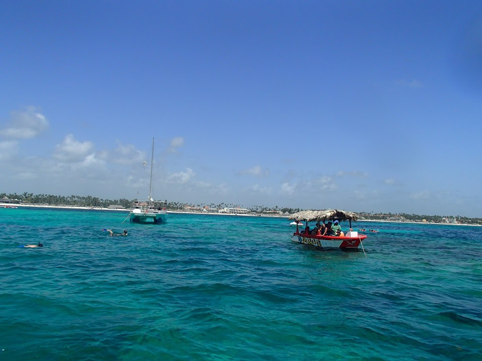
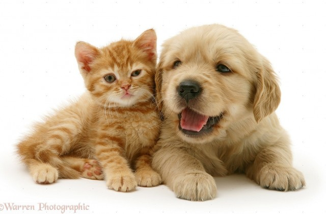

My Favorite Things

Cupcakes are so fun to bake, decorate, and eat !
Sunsets are beautiful in the summer time.

By the ocean is my favorite place to be.

I love many animals but dogs and cats are my favorite.